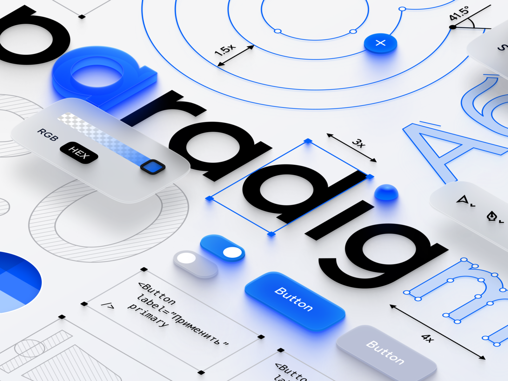
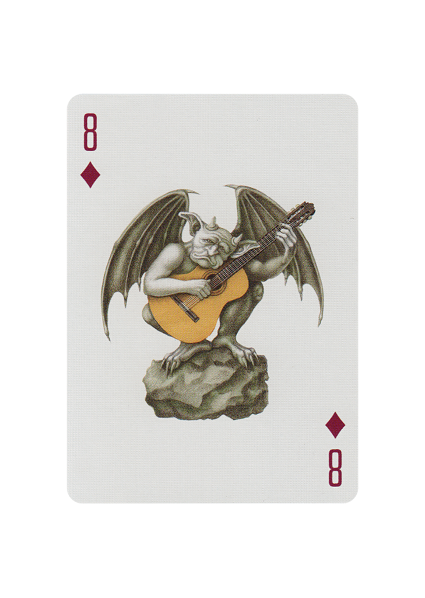

设计周刊 Design Weekly #53
📕 设计资源
5 powerful illustration tools for designers
https://uxdesign.cc/5-powerful-illustration-tools-for-designers-b5c7d22831e
视觉设计是增强用户体验的重要元素之一，会影响人们使用产品的选择。而插画作为常见的视觉设计，在产品与用户之间的交流越发有效。大多数时候用户都是在浏览，对于视觉动物的人可以很好的理解插画传达的信息。这里介绍 5 个工具：
品牌指南模板
https://www.behance.net/gallery/88198917/Free-Brand-identity-guidelines-template
这是一套品牌识别模板，由设计师 Alaa Choichnia 提供， illustrator CS5/CS6/CC 格式，支持印刷，100%免费。
品牌识别指南展示品牌的价值，详细描述如何使用品牌及相关元素，如标识、名称等。对于品牌设计师来说是一个很好的借鉴模板。
公众号内回复 Brand 可获得全套源文件。
Calendar
https://dribbble.com/shots/8204792/attachments/584083?mode=media
Figma 格式的预定日历，由 Damir 设计，有 dark 和 light 两种版本。
公众号内回复 Calendar/日历 即可获得源文件。
📗 设计文章
The process of receiving design feedback
https://www.editorx.com/shaping-design/article/feedback-design
接受拥抱各种观点，对于推动创意工作是至关重要的，这篇文章讲解了如何从设计反馈中获得真正的成长和改进。
How to redesign, step by step guide
https://uxdesign.cc/how-to-redesign-step-by-step-guide-869379604734
这篇文章适用各种重新设计，从功能到完整的应用程序设计。通过双钻模型，讲述了重新设计需要经历的四个主要阶段：发现、定义、探索、执行。
设计基础-绝对不要使用纯黑色
https://uxplanet.org/basicdesign-never-use-pure-black-in-typography-36138a3327a6
为什么颜色会影响阅读舒适度？来看看作者 Jufry Heryanta 从减轻眼疲劳和可读性方面的分析吧。
📘 设计案例
Paradigm 2.0-Mail.ru设计系统
https://dribbble.com/shots/15381710-Paradigm-2-0
Mail.ru 的设计系统 Paradigm2.0 版本，更新了新的设计原则、视觉语言、调色板等。

Say hello, new logo
https://www.pentagram.com/work/slack
Pentagram 工作室为 Slack 设计的新标识，该标识体现了品牌的简单性和易用性，使其在不同规模和环境中更好地被应用。扩展的视觉语言使用了更精致的调色板，保留了品牌本身的调皮个性。

📙 设计灵感
Art of Play
https://www.artofplay.com/products/cabinetarium
一组超现实主义的扑克牌设计，由屡获殊荣的插画家 Armando Veve 手工绘制的 55 幅原创作品组成。
Veve 将奇异的生物、荒诞的物品和异国情调的幻想结合在一起，创造出一种奇特的视觉效果，一个充满神话色彩的思想集合体，激发着人们的想象力。浏览这些扑克牌上的插图时，其精湛的工艺让人联想到博世、埃舍尔和达利。

在语言的网络中，字符都跳起了舞
https://www.topys.cn/article/31564
语言，可以轻易伪饰，亦可以成为映照内心的镜子。诚然它终究不能成为威士忌，在推杯换盏之间毫无损耗地传递讯息。但正由于它可以编辑并且具象化，才得以形成了一个新的意义符号。
在大橋史的艺术世界，我们能看到字符在语言织就的网络里尽情跳舞，而所有规则均是基于其对于现实的洞察和艺术理解。而字符形成的对话又构成了新的对话，在对话与对话之中，我们得以窥见一种独特的美学。